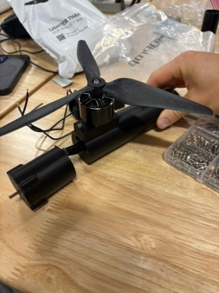

Projects
Triphibian Rover — Aggies Create
Systems Mechanical Design Lead
Amphibious rover designed to drive, fly, and float. Large foam wheels double as buoyant floats, with an integrated paddle design for water movement that minimizes turbulence in the air.
Design Semester — Spring 2026
Airframe components, structural chassis bays, dynamic seals, and connection architecture designed in PTC CREO and SolidWorks, with SolidWorks Flow Simulation used to compare wheel profiles for drag versus buoyancy. First frame iteration printed and presented at the Spring 2026 Aggies Create Innovation Expo, where it won Top New Project.
Build Semester — In Progress
The design is done — the team is now building the drone, working toward an end-of-semester prototype. Current work includes a redesigned front frame half with DC and brushless motors.

Manpower Automation Tool — Dynamic Systems, Inc.
Project Management Intern · Summer 2026
Months of payroll timesheets — separated by trade, hour type, and employee — had to be consolidated by hand across dozens of sheets. I built a VBA and Python script that reads every timesheet tab, identifies each trade by job code, consolidates hours across entries, filters out sub-12-hour weeks, and outputs a Weekly Overview table plus a 9-chart dashboard. A 60-minute manual task now takes seconds, giving managers faster insight for budgeting and staffing decisions.
Dynamic Systems, Inc. — Field Work
Summer 2026 Internship
Time on live job sites alongside the office work — mechanical piping and sheet metal systems in progress, including a weld QC tracking system mapping 275 individual welds by ID, plus the Buda shop center.
2D & 3D Kinetic Toy — MEEN 210
Geometric Design and Modeling
A functional kinetic toy built around a gear-driven Chebyshev lambda linkage, designed with a team. First built in 2D — SolidWorks models, laser-cut acrylic pieces, pinned and glued, then painted. Then reimagined in 3D with 10+ custom 3D-printed gears, applying a 0.15 mm tolerance offset across pin-joints and gear profiles to account for printer shrinkage and laser kerf, and validated across 3 design iterations before presenting at the class Toy Fair.